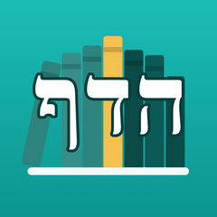

הדף
מעקב אחרי דף יומי, עמוד יומי וקצב אישי, באייפון וב-Apple Watch.
צריכים עזרה?
אפשר לשאול שאלה, לדווח על תקלה או להציע רעיון דרך עמוד הפניות.
שאלות נפוצות
איך מסמנים כמה דפים בבת אחת?
במסך של מסכת, החליקו את האצבע לצדדים על גבי הדפים.
מה קורה אם פספסתי יום?
תכנית ההשלמות מחלקת את מה שנשאר מחדש על הימים עד סוף המחזור.
איך עוברים למכשיר חדש?
כשמחוברים לאותו חשבון iCloud הנתונים מסתנכרנים לבד. אפשר גם ליצור קובץ גיבוי במסך ההגדרות ולשחזר ממנו.
האם האפליקציה בתשלום?
לא, היא חינמית.